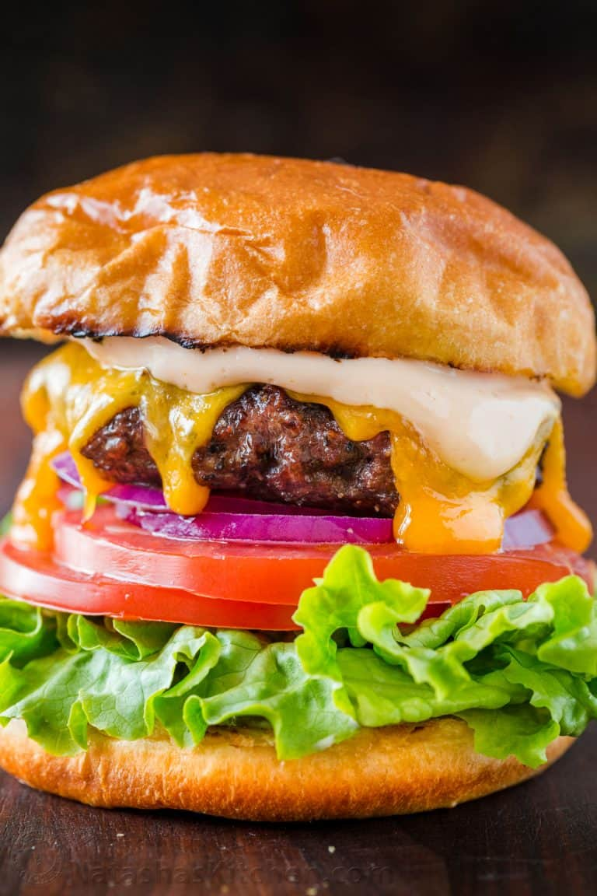
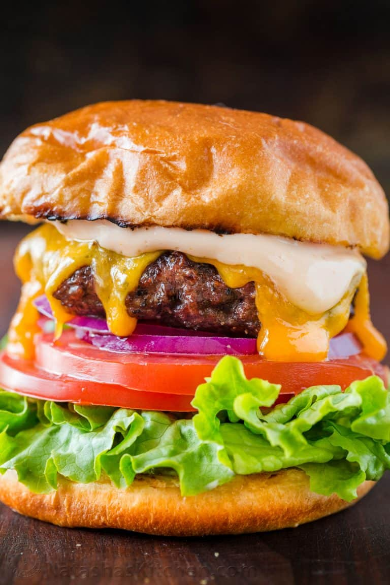

Szia, ez az én szuper jó oldalam!
Orders
Szia, ez az én szuper jó oldalam!
Szia, ez az én szuper jó oldalam!
This is paragraph 1
This is paragraph 2
It is very important text
This is paragraph 2
It is very important text
content
This is paragraph 2
Fantastic Burger
- Meat lover
- Vegetarian
- Piedone
Step of order
- Choose a burger
- Buy
- Give your address
- Enjoy
Perfect Burger Recipe
Orders
 Perfect Burger Recipe New Tab
Perfect Burger Recipe New Tab
 
